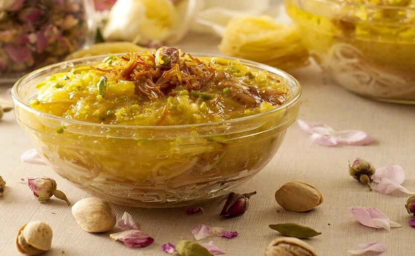

____
Традиционная еда
Qatari machboos | Макбус — На Востоке это блюдо известно как кабса, а мы бы назвали его пловом. Длинный рис золотистого цвета, крупные куски мяса, кусочки спелых томатов, сочного лука, сладкой моркови, целый букет пряностей – его ни с чем не спутаешь.

Warak enab | Варак энаб — В России это долма, а на Востоке – варак энаб или «виноградные листья». Обязательно попробуйте в Катаре пухлые зеленые рулетики с сытной начинкой из мяса, риса и специй. Начинка состоит из бараньего фарша, обжаренной крупы, душистого перца, мускатного ореха и корицы. Смесь прячут в ярко-зеленые листья винограда и варят в кастрюле на подушке из сырой картошки.
Harees | Хариса — На завтрак в Катаре можно попробовать пшеничную кашу с курицей: нежную, ароматную, сливочную. Цельную крупу готовят с мясом на медленном огне в течение 2 часов. Они развариваются до консистенции паштета.

Thareed | Сарид — Однажды пророк Мухаммед сказал, что его жена превосходит других женщин так же, как сарид превосходит другие блюда. Поэтому для мусульман это простое кушанье считается священным. Его готовят из мяса и хлеба. Остальные тонкости зависят от повара. В Катаре любят сарид из крупных кусков баранины с нутом, картофеля и овощей.
Madhruba | Мадруба — Катар поворовал рецепты национальных блюд у соседей, но рецепт «взбитой каши» был придуман здесь. Рис, молоко, топленое масло и кардамон варят до консистенции пасты. В отдельной кастрюле тушат курицу с бобами, овощами, зеленью и восточными пряностями
Saloona | Салуна — Острый мясной или овощной бульон. Это самый популярный суп в Катаре, который готовят на рынках, в местных закусочных, ресторанах традиционной кухни и при отелях. Его варят из картофеля, баклажанов, моркови, картофеля и лука.
Balaleet | Балалит — Это нестандартное блюдо традиционной арабской кухни можно попробовать в Катаре на завтрак или съесть в качестве десерта. В основе тонкая золотистая вермишель, обжаренная до румяной корочки с сахарным сиропом, кардамоном и шафраном.

Samboosa | Самбуса — Из уличной еды в Катаре нужно попробовать самбусу и хабус. Samboosa – треугольные пирожки из хрустящего бездрожжевого теста. Обычно их готовят с сыром. Горячая сливочная начинка получается тягучей и нежной. Золотистые пирожки самбуса могут пожарить с мясом, овощами или чем-то сладеньким.
____